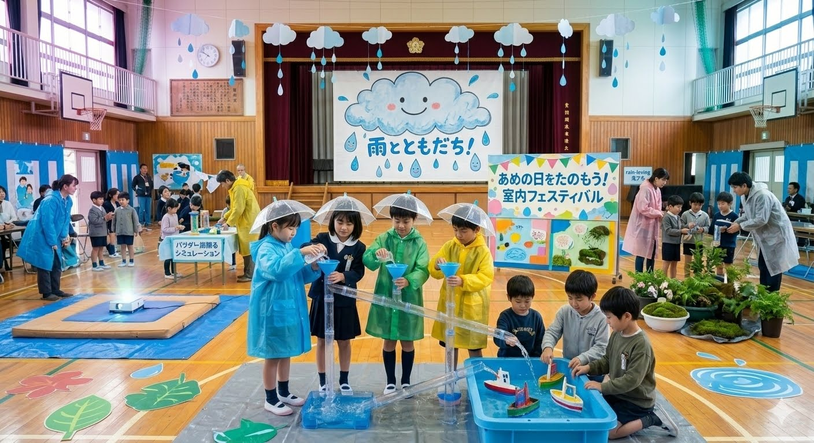
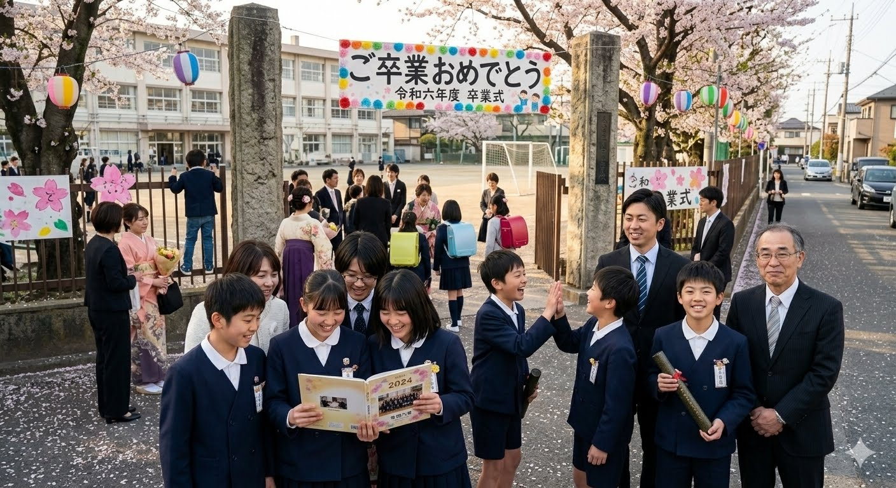

校長挨拶
改めまして皆さんこんにちは！
発火孫小学校第69代校長、岩永信樹です。本校も早いもので創立100年を迎えました。
設立当初から大切にしている人格力とプログラミング力は今までもそしてこれからも紡いでいきたい我々の校訓であります。
過去から現在へと紡がれる素晴らしき我々の学校に一度足を踏みいれてみてはいかがでしょうか？
年間スケジュール
４月
入学式
５月
運動会
６月

雨の日を楽しもうの会
７月
プール開き
８月
夏休み
９月
避難訓練
１０月
遠足
１１月
音楽会
１２月
冬休み
１月
お正月大会
２月
６年生を送る会
３月

卒業式